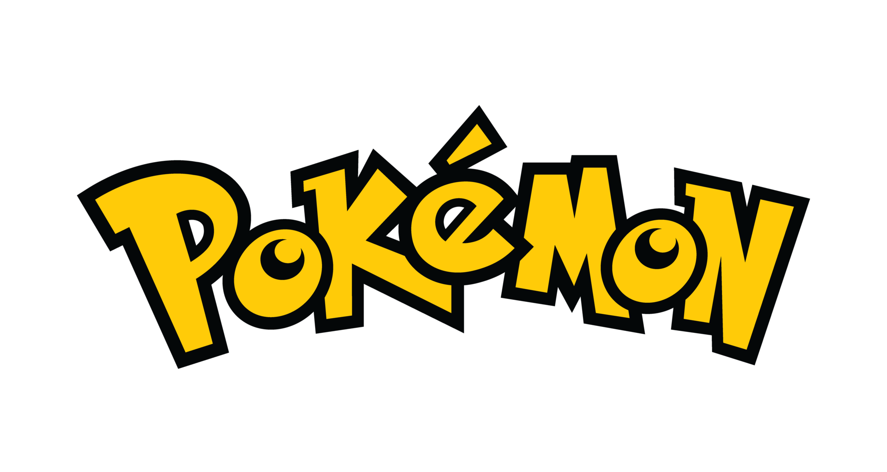

<div
  class="sidebar"
  [ngClass]="{
    'shadow-light': currentTheme === 'dark',
    'shadow-dark': currentTheme !== 'dark'
  }"
  [class.show]="showSideBarOnMobile || windowWidth > 576"
>
  <div class="background"></div>
  <div class="sidebar-header">
    
  </div>
  <div *ngFor="let item of items">
    <button
      [ngClass]="{
        'button-dark': item.label === selectedButton
      }"
      class="w-100 gap-3 rounded-2 {{ item.label }}"
      (click)="selectButton(item.label, item.path)"
    >
      <lucide-icon [size]="18" [name]="item.icon"></lucide-icon>
      <span class="text-theme-mode">{{ item.label }}</span>
    </button>
  </div>
</div>
<div
  *ngIf="windowWidth <= 576"
  class="hamburger-menu"
  (click)="toggleSidebar()"
>
  <lucide-icon [size]="24" name="menu"></lucide-icon>
</div>
<div
  *ngIf="showSideBarOnMobile && windowWidth <= 576"
  class="overlay"
  (click)="toggleSidebar()"
></div>
